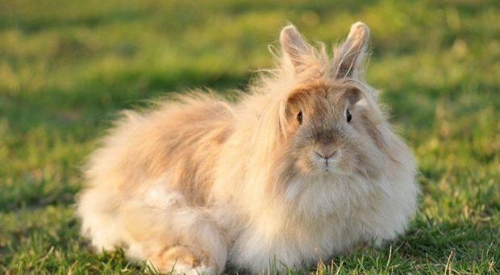

>
>
>
>
Психологія та поведінка
Домашні кролики мають цікаву та різноманітну поведінку, яка відображає їхню інтелектуальну і емоційну природу. Вони можуть бути дуже соціальними і ласкавими, якщо отримують достатньо уваги та правильно доглядаються. Кролики – соціальні тварини, які потребують взаємодії з іншими кроликами або людьми. Самотність може призвести до стресу та депресії у кролика. Вони здатні навчатися різним трюкам і командам, що робить їх цікавими для взаємодії. Кролики люблять гратися з іграшками і досліджувати нові місця, а також використовують різні пози та рухи для вираження своїх емоцій. Наприклад, коли вони задоволені, можуть видавати м'які звуки або лягати на спину. Водночас кролики можуть бути дуже обережними і легко лякатися гучних звуків або різких рухів. У стресових ситуаціях вони можуть проявляти агресію, кусати або дряпати. Деякі кролики можуть бути дуже територіальними, особливо якщо у них є власна клітка або простір. Вони можуть захищати свою територію від інших тварин або людей. Важливо розуміти та поважати ці особливості поведінки, щоб забезпечити комфорт і безпеку для вашого пухнастого друга.
Догляд
Житлові умові
Забезпечення належних житлових умов для вашого кролика є ключовим аспектом його добробуту та здоров'я. Кролики потребують простору, безпечного та комфортного середовища, де вони можуть жити, грати та відпочивати.
Простір для життя
Клітка або вольєр повинні бути достатньо великими, щоб кролик міг вільно рухатися, стрибати і лежати. Мінімальний розмір клітки для одного кролика повинен бути не менше 120 см в довжину, 60 см в ширину і 60 см у висоту. Однак, більший простір завжди кращий, особливо якщо у вас більше одного кролика. Крім клітки, кролики потребують можливості для вільного вигулу. Забезпечте їм безпечну зону в будинку або на вулиці, де вони зможуть бігати, гратися і досліджувати оточення під наглядом.
Облаштування клітки
Клітка повинна бути облаштована різноманітними предметами, які забезпечать комфорт та розваги для кролика. Використовуйте м'яку підстилку або спеціальні килимки для підлоги клітки, щоб забезпечити комфорт і запобігти травмам лап. У клітці повинні бути присутні місце для годування, поїлка, туалетний лоток, а також схованка або будиночок, де кролик зможе відпочити і відчути себе у безпеці.
Безпека і гігієна
Регулярно чистіть клітку та змінюйте підстилку, щоб уникнути накопичення бруду і неприємних запахів. Стежте за чистотою поїлки та мисок для корму, щоб запобігти розмноженню бактерій. Забезпечте, щоб у зоні вигулу не було небезпечних предметів або рослин, які можуть зашкодити кролику.
Комфорт і стимуляція
Кролики люблять гризти іграшки та досліджувати нові предмети. Забезпечте їм різноманітні іграшки, тунелі, картонні коробки та інші безпечні предмети для гри. Це допоможе їм залишатися активними і запобігти нудьзі. Проводьте час зі своїм кроликом, грайте з ним і спілкуйтеся, щоб забезпечити його психологічне благополуччя.
Як чистити клітку для кролика
Регулярне чищення клітки для кролика є важливою частиною догляду за ним. Це допомагає підтримувати здоров'я кролика та запобігти неприємним запахам. Ось кроки, які допоможуть вам правильно і ефективно чистити клітку:
Щоденне чищення
Видалення залишків їжі:
Щодня перевіряйте клітку на наявність залишків їжі, таких як недоїдені овочі або фрукти, і видаляйте їх, щоб запобігти псуванню та розвитку бактерій.
Заміняйте воду:
Щодня міняйте воду в поїлці, щоб вона була свіжою і чистою. Ретельно мийте поїлку перед заповненням свіжою водою.
Прибирання туалетного лотка:
Видаляйте брудну підстилку та фекалії з туалетного лотка щодня. Якщо використовується паперова підстилка, заміняйте її чистою.
Щотижневе чищення
Переміщення кролика:
Перемістіть кролика у безпечне місце, наприклад, у загін для вигулу або іншу клітку, щоб він не заважав і не стресував під час чищення основної клітки.
Видалення підстилки:
Повністю вийміть усю стару підстилку з клітки. Якщо ви використовуєте різні матеріали для підстилки, видаліть їх усі.
Миття клітки:
Використовуйте теплу воду і м'який миючий засіб, щоб ретельно вимити підлогу та стінки клітки. Уникайте сильних хімічних засобів, які можуть бути шкідливими для кролика. Можна також використовувати спеціальні безпечні для тварин чистячі засоби.
Полоскання та сушка:
Ретельно змийте миючий засіб з клітки чистою водою. Переконайтеся, що всі залишки миючого засобу видалені. Потім дайте клітці повністю висохнути перед тим, як розмістити нову підстилку і повернути кролика.
Чистка аксесуарів:
Мийте всі аксесуари клітки, такі як миски для корму, поїлки, іграшки та схованки. Використовуйте теплу воду і м'який миючий засіб, потім ретельно сполосніть і висушіть їх.
Розміщення нової підстилки:
Після того, як клітка повністю висохла, розкладіть нову підстилку. Використовуйте м'які матеріали, які комфортні для кролика і не спричиняють подразнень. Наприклад, можна використовувати паперові гранули або спеціальні килимки для підлоги.
Розстановка аксесуарів:
Поверніть усі аксесуари на їх місця, включаючи миски для корму, поїлки, туалетний лоток, іграшки та схованки. Переконайтеся, що все розміщено так, щоб кролик мав достатньо простору для руху і гри.
Харчування
Основні складові раціону
Сіно: Кролики повинні мати постійний доступ до сіна. Воно є основою їхнього раціону і має бути доступне для них цілодобово. В середньому, кролики споживають від 60 до 120 грамів сіна на кілограм ваги кролика на день.
Свіже овочі та зелень: До раціону кролика також слід додавати свіже овочі та зелень, такі як морква, салат, капуста, петрушка, шпинат та інші. Рекомендується рознообразити види овочів та зелені, які ви даєте, для забезпечення різноманітності поживних речовин.
Фрукти: Фрукти можна давати у невеликих кількостях як ласощі. Найкраще вибирати фрукти з низьким вмістом цукру, такі як яблука, груші, або ягоди. Уникайте перевищення цієї кількості, оскільки великі порції фруктів можуть призвести до проблем зі шлунком.
Корм для кроликів: Додавайте до раціону спеціальні кормові суміші для кроликів, які містять всі необхідні поживні речовини. Вибирайте високоякісні корми відповідно до віку та рівня активності вашого кролика.
Гігієна кроликів
Чиста клітка чи вольєр
Щоденне прибирання:Клітку або вольєр кролика слід очищати щоденно від залишків їжі, сміття та відпадків. Це допоможе уникнути появи неприємного запаху та збереже комфортне середовище для кролика.
Регулярна заміна підстилки: Підстилку слід замінювати не рідше одного разу на тиждень, залежно від того, як швидко вона забруднюється. Важливо, щоб підстилка була сухою і чистою, оскільки вологе середовище може призвести до виникнення хвороб шкіри та інших проблем зі здоров'ям.
Догляд за шерстю та шкірою
Чесання: Регулярне чесання шерсті допомагає уникнути утворення комів та видалення відмерлих волосків. Це особливо важливо для кроликів з довгою шерстю, так як вони схильні до утворення комів та ускладнень з шкірою.
Очистка вух: Періодично перевіряйте вуха кролика на наявність вушної сірки або попелу. Якщо ви виявите будь-які ознаки забруднення, використовуйте м'яку ватку, злегка змочену в воді або спеціальний засіб для чищення вух, щоб обережно очистити вуха.
Догляд за кігтями
Обрізання кігтів: Кігті кролика можуть потребувати обрізання, особливо якщо вони стають довгими та гострими. Це може відбуватися природним шляхом, але в деяких випадках кролик може потребувати допомоги в цьому процесі. Краще звернутися до ветеринара або досвідченого грумера для обрізання кігтів, щоб уникнути травм та кровотеч.
Ванна
Купання: Кроликам не потрібно купатися, так як це може призвести до стресу та хвороб. Вони самі доглядають свою шерсть і використовують спеціальні техніки гігієни, які допомагають їм залишатися чистими та здоровими. У разі потреби ви можете використовувати вологу серветку або м'яку щітку, щоб очистити шерсть вашого кролика.
Породи
Міні-Рекс
Міні-Рекс відомі своєю короткою, оксамитовою шерстю, яка майже не вимагає догляду. Вони зазвичай мають доброзичливий характер і легко адаптуються до домашніх умов. Міні-Рекси є середніх розмірів, що робить їх зручними для утримання в квартирі.
Голландський висловухий кролик
Ця порода має характерні великі вуха, які звисають вниз. Голландські висловухі кролики відомі своїм спокійним і лагідним характером. Вони підходять для сімей з дітьми, оскільки мають терплячий і дружній темперамент.
Левова голова
Кролики породи Левова голова мають довгу гриву навколо голови, що нагадує левову. Вони потребують регулярного догляду за шерстю, але їх милий зовнішній вигляд та дружній характер роблять їх чудовими домашніми улюбленцями.
Нідерландський карликовий кролик
Це одна з найменших порід кроликів, що робить їх ідеальними для утримання у невеликих квартирах. Нідерландські карликові кролики мають активний і допитливий характер, вони люблять досліджувати своє оточення і гратися.
Флемішський гігант
Хоча це найбільша порода кроликів, Флемішські гіганти відомі своїм доброзичливим і спокійним характером. Вони потребують більше простору для життя, тому краще підходять для будинків з більшими приміщеннями.
Ангорський кролик
Ангорські кролики мають довгу і м'яку шерсть, яка потребує регулярного догляду та чесання. Їх зазвичай вибирають ті, хто готовий приділяти час догляду за шерстю. Вони мають лагідний характер і підходять для тих, хто шукає спокійного та ніжного улюбленця.
Лопарні висловухі кролики
Ці кролики мають коротку шерсть і великі вуха, які звисають. Вони відомі своїм дружелюбним і спокійним характером. Лопарні висловухі кролики підходять для родин, оскільки вони легко соціалізуються і люблять проводити час з людьми.